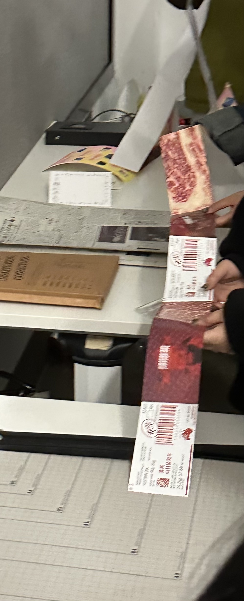

陈龙 Wx/Tel 18121115698
Chen Portfolio (情绪 Emotion ) (语言 Language) (生活Life)


这个项目渍言渍语的命名是以因其视觉表达效果，借此种形式来探讨人类活动与污渍之间紧密的联系，是一种无声印记的语言， 甚至可以说是人类的第二语言，用污漬當作一種語言， 污渍大家可能注意不到 他出现的时候 又会 给人带来很大的焦虑感或者是烦 躁感，但是又離不開污漬，污漬是貼近人生活的一種生命的痕跡，视化的形式是多样且丰富的，我 以此来表现对污渍话题的探究，此项目的目的或许不是解 决问题，而是启迪，引发大众的思考。